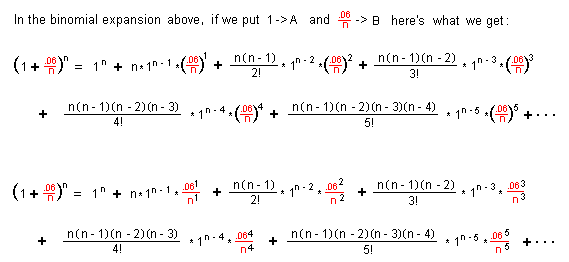

Answers for Chapter 11 Sample Problems
4. Compound interest
What would the amount you have in
the bank after 1 year, putting in $1, at 6%, compounded quarterly
(4 times per year)?(1 +
.06/4)4 = $1.061363551
What would the amount you have in
the bank after 1 year, putting in $1, at 6%, compounded monthly (12 times per year)?(1 +
.06/12)12 = $1.061677812
What would the amount you have in
the bank after 1 year, putting in $1, at 6%, compounded daily (365 times per year)?(1 +
.06/365)365 = $1.061831311
What would the amount you have in
the bank after 1 year, putting in $1, at 6%, compounded 10,0000 times per year?(1 +
.06/10,000)10,000 = $1.061836355
What would the amount you have in
the bank after 1 year, putting in $1, at 6%, compounded continuously,
(an infinite number of times per year)?
We end up with an infinite sequence
1.12, 1.061363551, 1.061677812, 1.061831311, 1.061836355, 1.0618363547...
which approaches the limitn->inf(1 + .06/n)n =
1.0618363547...
= e.06
WOW!
Kirsten, now 15, started with me at age 5. On Sept. 10, 1996 she was
working on this
problem (using .07 instead of .06) for her calculus class. We graphed (1 + .07/x)x in Derive, but
couldn't import it into a paint program and then to a gif file. So we
graphed it in Mathematica and got this:
Here are some of the
things we explored in Mathematica and Derive with some
surprising and exciting results:
(1 + .07/-0.1)-0.1 =
1.12794, a real number. Check the graph.
(1 + .07/0)0 = 1 This was hard to believe, but
the graph bears it out!
(1 +
.07/0.001)0.001 = 1.00427
(1 +
.07/-0.07)-0.07 Mathematica gives:
"Power::infy: Infinite expression 0.-0.07 encountered. ComplexInfinity." as the
answer. Derive gives " + or - infinity" as the answer.
(1 + .07/-0.01)-0.01 =
0.981757 - 0.030853i ; which makes sense when
you look at the graph.
limitx->0(1 + .07/x)x = 1
limitx->0,Direction->-0(1 + .07/x)x
Mathematica gives: "Power::infy: Infinite expression 1/0
encountered. Infinity::indet: Indeterminate expression ComplexInfinity"
0
encountered.
Indeterminate"
limitx->infinity(1 + .07/x)x = 1.072508181254216
and e.07 = 1.072508181254216
The first 6 terms of the binomial expansion are:
n.gif)

9. Ian looked for patterns always, and found
 = e .
= e .
How about that.
To order Don's
materials
To Ch. 11 problems
Mathman home